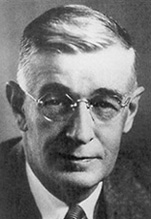

Ab 1930 entwickelte Vannevar Bush(1890-1974) verschiedene Rechenmaschinen. Der Differentialanalysator (differential analyzer) war ein analoges Gerät, welches alle 10 Ziffern des Dezimalsystems zum Rechnen verwendete, anstelle des Binär-Systems, das von seinem Studenten Claude Shannon ersonnen wurde. Jahre später(1945) beschreibt Vannevar Bush in seinem Artikel "As We May Think" eine Vorrichtung, die er MEMEX nennt. Der MEMEX ist ein Schreibtisch mit einem Speicher-System aus Mikro-Filmen und Bildschirmen. Bush schlägt in dem Artikel eine assoziative Form der Daten-Verknüpfung vor, die im Prinzip die "Hyper-Links" des Internets vorwegnimmt. Bush: Es braucht jedoch noch einen weiteren Schritt zur assoziativen Indizierung. Deren grundlegender Gedanke ist das Verfahren, von jeder beliebigen Information - sei es Buch, Artikel, Fotografie, Notiz - sofort und automatisch auf eine andere zu verweisen. Der Arzt und Schriftsteller Miles J. Breuer, M.D.(1889-1947) schreibt "Paradies und Eisen": Ein mechanisches Gehirn wird zum Tyrannen.